MNX specification
Home
Reference
Objects
Example documents
MNX and MusicXML
MNX specification
>
MNX reference
> Examples
MNX example documents
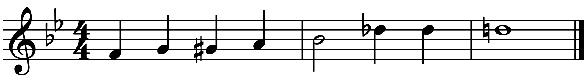
Accidentals
Beams
Beams (across barlines)
Beams (hooks)
Beams (secondary beam breaks)
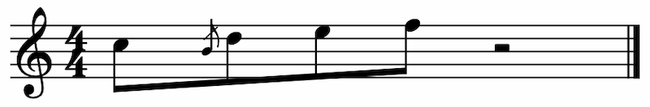
Beams (with inner grace notes)
Dotted notes (augmentation dots)
Grace note
Grace notes (beamed)
Jumps (D.S. al Fine)
Jumps (Dal Segno)
Key signatures
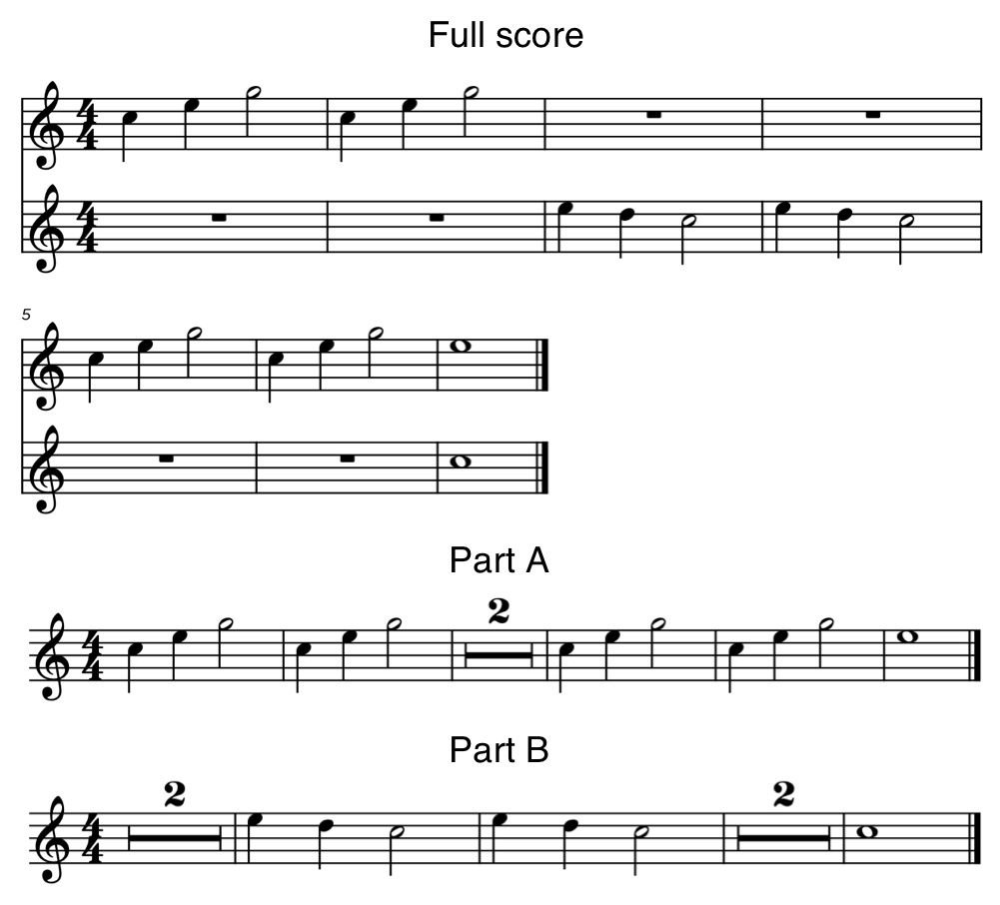
Multimeasure rests
Multiple layouts
Multiple voices
Octave shifts (8va)
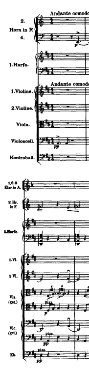
Orchestral layout
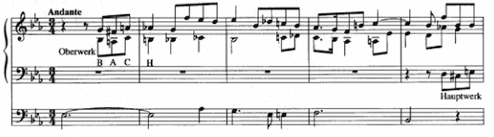
Organ layout
Parts
Repeats
Repeats (more than once repeated)
Repeats (with alternate endings, advanced)
Repeats (with alternate endings, simple)
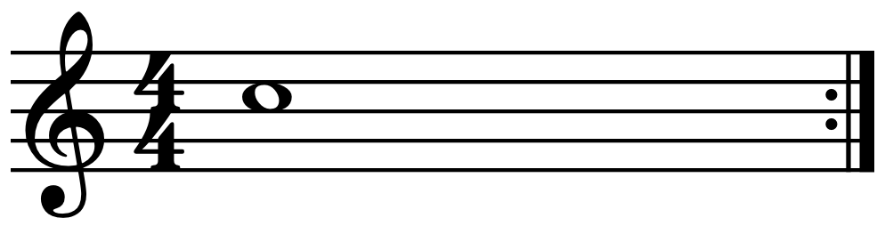
Repeats (with implied start repeat)
Slurs
Slurs (for chords)
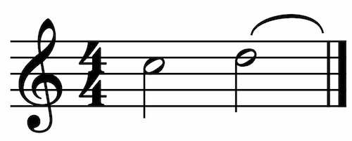
Slurs (incomplete slurs)
Slurs (targeting specific notes)
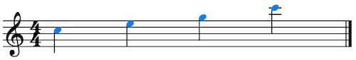
Styling elements (basic)
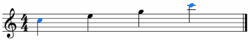
Styling via a class (basic)
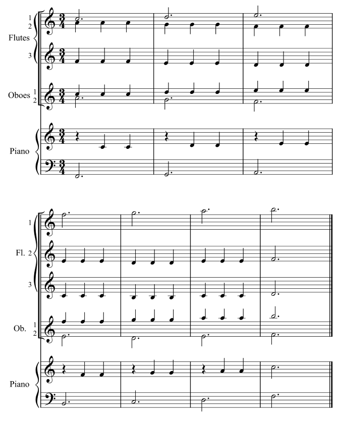
System layouts
Tempo markings
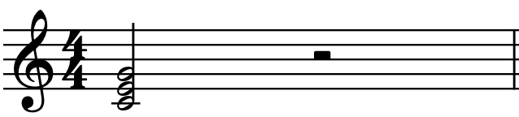
Three-note chord and half rest
Ties
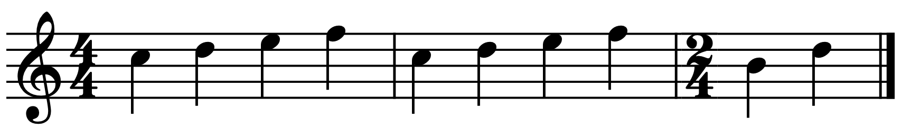
Time signatures
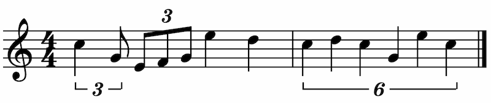
Tuplets
Two-bar C major scale
“Hello world”